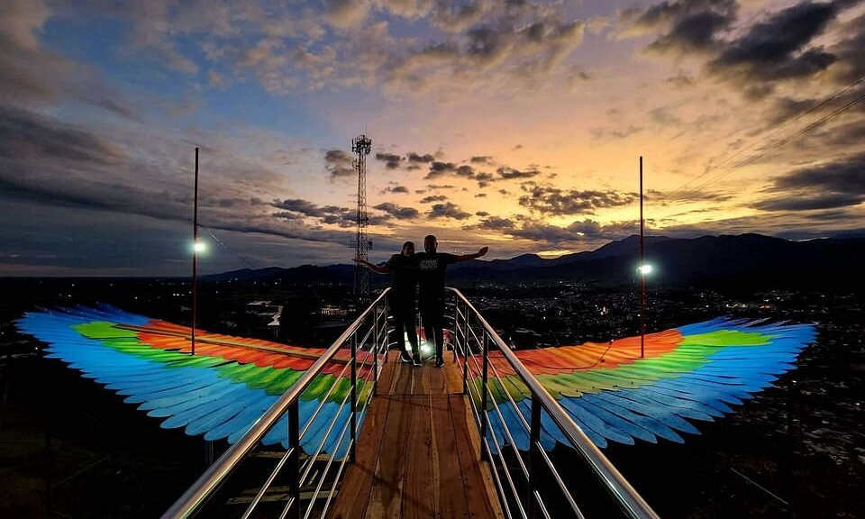
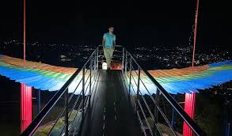

Mirador 360 Florencia


Contempla la belleza de Florencia desde las alturas en el Mirador 360, un punto panorámico que te ofrece vistas espectaculares de la ciudad y sus alrededores. Este lugar es ideal para disfrutar de atardeceres inolvidables y tomar fotografías impresionantes. Ya sea que desees relajarte o simplemente admirar la naturaleza, el Mirador 360 es una parada obligatoria para todos los visitantes de la región.